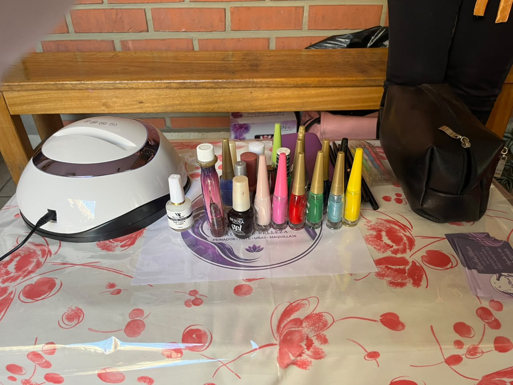
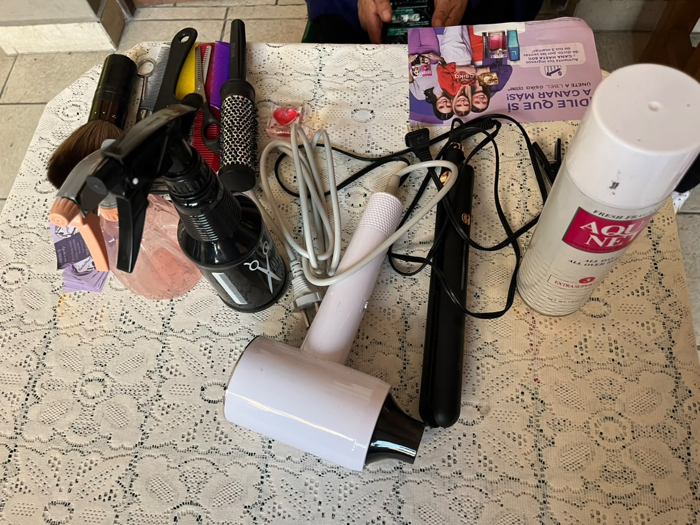
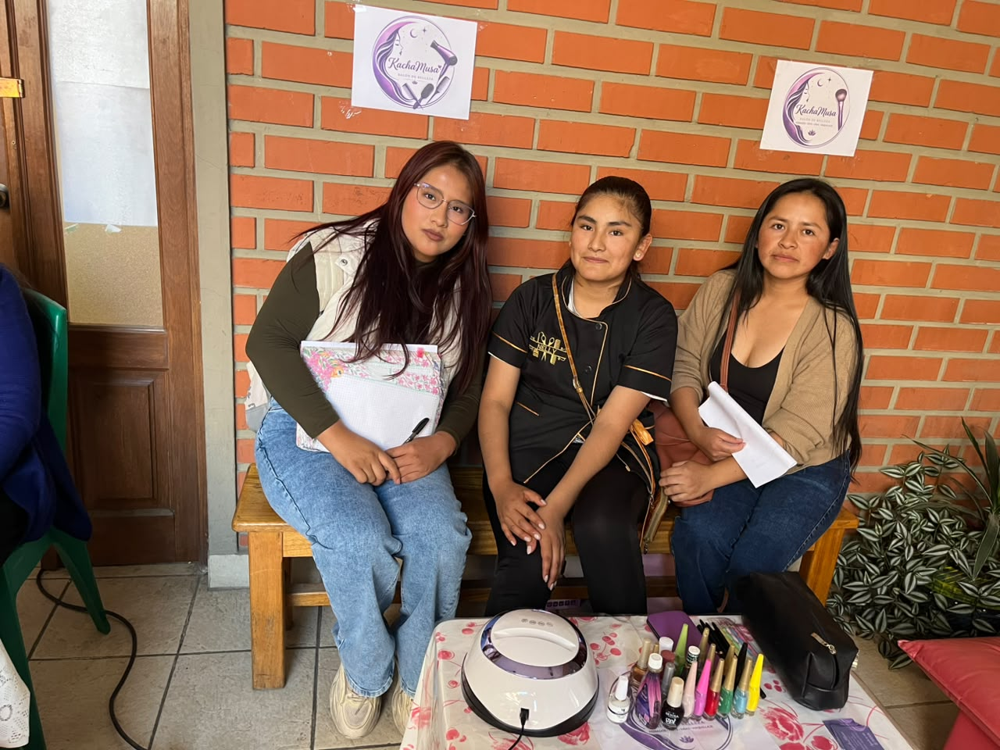

FEXPO ITSEC 2026 - ¡Bienvenidos!
FEXPO ITSEC SUCRE

En la FEXPO ITSEC Sucre se presentan diferentes emprendimientos que permiten conocer las ideas de negocio de los participantes. Entre ellos se encuentra Kachu Musa, un salón de belleza que ofrece servicios relacionados con el cuidado personal y la belleza.



Kachu Musa es un emprendimiento de belleza cuya dueña es Nelly Calvimontes. Se especializa en peinados, planchados, manicura y pedicura, ofreciendo diferentes servicios para el cuidado de la imagen personal.
El emprendimiento representa una oportunidad de negocio para brindar atención a personas que desean mejorar su apariencia y recibir servicios de belleza.
Entre los servicios que ofrece se encuentran los peinados, planchados, manicura y pedicura, que permiten satisfacer las necesidades de sus clientes en diferentes ocasiones.
El objetivo de Kachu Musa es brindar servicios de belleza y cuidado personal, procurando que los clientes se sientan cómodos y satisfechos con la atención recibida.
La participación de Kachu Musa en la FEXPO ITSEC permite dar a conocer el emprendimiento, promocionar sus servicios y mostrar cómo una iniciativa personal puede convertirse en una oportunidad de crecimiento económico.